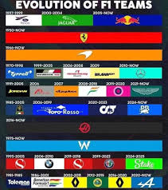

PilotosLos pilotos son los encargados de conducir los monoplazas y representar a sus equipos durante la temporada. EscuderíasLas escuderías diseñan y desarrollan los autos con los que compiten en cada carrera. CampeonatoA lo largo del año se disputan varias carreras para definir al campeón de pilotos y constructores. CircuitosLas competencias se realizan en distintos circuitos alrededor del mundo, cada uno con características únicas. |
 |